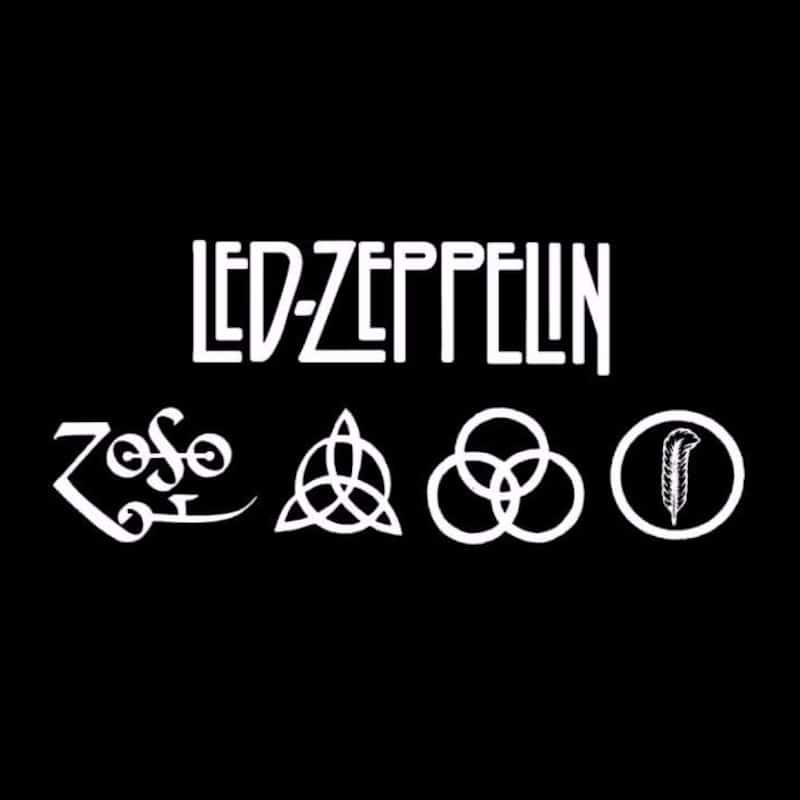

Led Zeppelin
- Favorite Songs:
- Over the Hills and Far Away
- When the Levee Breaks
- Tangerine
- Over the Hills and Far Away
- Favorite Album:
- Led Zeppelin I
This is and will always be the overarching favorite. I own all of the albums, discover new inspirations for their songs and learn all kinds of weird trivia lessons about them all the time. Look deep into each member of the band and you will find musical genius in everything they do. For example, the drums on "When the Levee Breaks," have a deep, echo in them because they were recorded with the drums positioned at the bottom of the staircase. The sound traveled throughout the space and created an amazing atmosphere for the song to build on.